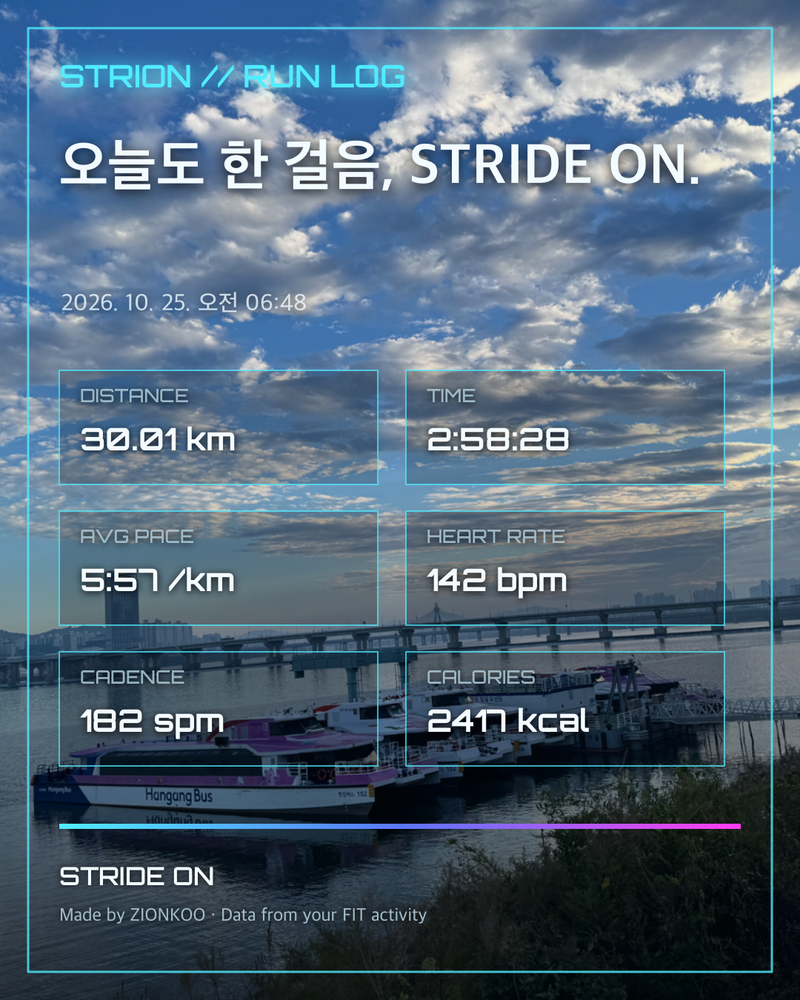

01 · Overview
기록을 불러오고 이해한 뒤, 다음 행동까지 이어갑니다
STRION은 Garmin 기록을 단순히 시각화하는 데 그치지 않고, 기록을 불러오고 분석한 뒤 다시 확인하고 다음 훈련과 레이스 계획에 활용하는 흐름을 중심으로 구성했습니다. 이름은 STRIDE + ON의 합성어입니다.
INPUTFIT와 Garmin
수동 FIT 업로드와 개인 Garmin Connect 동기화로 기록을 가져옵니다.
ANALYSIS러너 중심 해석
분산된 페이스·심박·러닝 다이내믹스와 구간 변화를 한 흐름으로 정리합니다.
ACTION다음 계획
저장 기록을 다시 확인하고 PB·대회 일정·목표 페이스·레이스 전략으로 연결합니다.
 LIVE EVIDENCE날씨, 다음 대회, 개인 PB와 기록 분석을 PC·모바일에서 같은 흐름으로 이용할 수 있도록 구성했습니다.
LIVE EVIDENCE날씨, 다음 대회, 개인 PB와 기록 분석을 PC·모바일에서 같은 흐름으로 이용할 수 있도록 구성했습니다.
02 · Problem & User
데이터는 많지만, 분석과 다음 계획은 이어지지 않았습니다
TARGET USER기록을 다음 계획에 쓰려는 개인 러너
Garmin 운동 기록을 분석하고 다음 훈련이나 레이스 계획에 활용하려는 개인 러너를 핵심 사용자로 설정했습니다. 개인 러닝 경험에서 출발한 시나리오이며 인터뷰로 검증한 페르소나는 아닙니다.
THREE PROBLEMS반복 입력 · 정보 분산 · 계획 단절
FIT를 반복해서 내려받아 업로드해야 했고, 거리·페이스·심박·러닝 다이내믹스가 흩어져 있었으며, 기록 분석이 다음 훈련과 레이스 계획으로 이어지지 않았습니다.
핵심 질문“오늘 달리기에서 무엇이 유지되거나 무너졌고, 이 기록을 다음에는 어떻게 달릴지 결정하는 데 쓸 수 있는가?”
03 · Before / After
파일 이동 중심에서 기록 탐색 중심으로
아래 순서는 실제 개발 일정이 아니라, 기록 입력과 분석을 중심으로 재열람·개인 설정·계획 연결·공유가 이어지는 기능 간 논리적 관계를 보여줍니다.
BEFORE · MANUAL- Garmin Connect에서 활동 찾기
- FIT 파일 내려받기
- STRION에서 파일 다시 선택하기
- 지난 기록마다 같은 과정 반복하기
AFTER · CONNECTED- Garmin 연결 상태 확인하기
- 원하는 월의 활동 동기화하기
- 날짜별 기록 선택하기
- 재업로드 없이 분석 다시 열기
01 · IMPORT기록 가져오기
FIT 파일 또는 Garmin 동기화
02 · UNDERSTAND한 화면 요약
핵심 수치와 구간 변화 확인
03 · REVIEW훈련 해석
심박 존과 러닝 다이나믹스 검토
04 · PLAN다음 행동
훈련·목표 페이스·대회 계획
04 · Functional Requirements
사용 흐름과 기능 의존 관계로 요구사항을 구성했습니다
기록을 입력하고 해석하는 기본 흐름을 중심으로, 재열람·개인 설정·계획 연결·공유 기능이 이어지도록 구성했습니다. 번호는 실제 개발 순서나 확정된 MVP가 아닙니다.
FR-01FIT 입력파일 업로드 또는 개인 Garmin 동기화로 분석할 원본 기록을 가져오기
FR-02기록 분석거리·시간·페이스·심박·고도·케이던스·보폭·수직 진폭·수직 비율을 일관된 단위로 표시
FR-03기록 재열람동일 활동 중복을 방지하고 브라우저 저장 기록을 날짜로 다시 열기
FR-04심박 ZoneGarmin 개인 설정값을 우선 적용하고 구간별 시간 분포를 표시
FR-05계획 연결PB·대회 일정·목표 기록에서 훈련 페이스와 km별 레이스 전략을 계산
FR-06기록 공유사진·영상 위에 활동 요약을 합성해 저장하거나 모바일 공유 메뉴로 전달
05 · Key Decisions
사용자 문제에서 선택 이유와 한계까지 연결했습니다
저장 및 날짜별 재열람반복 업로드를 줄이기 위해 브라우저 저장을 선택했고 실제 저장·복원을 확인했습니다. 다만 서버 기반 계정 백업과 같은 보존을 보장하지 않습니다.
개인 Garmin 동기화수동 FIT 입력의 반복을 줄이기 위해 Personal API와 Cloudflare Worker 중계, 월 단위 기록 가져오기를 구성했습니다. 공식 다중 사용자 OAuth 연동은 아닙니다.
Garmin 개인 심박 Zone 우선사용자 설정과 분석 결과를 맞추기 위해 Garmin 경계를 우선 적용하고 Zone 1–5 범위와 시간 분포를 원본 화면과 대조했습니다.
세 가지 레이스 전략목표 기록을 실행 가능한 km별 계획으로 바꾸기 위해 이븐·포지티브·네거티브 전략과 CSV를 제공했습니다. 실제 대회 기록 향상 효과는 측정하지 않았습니다.
사진·영상 기록 공유분석 결과를 공유 가능한 콘텐츠로 바꾸기 위해 기록 카드를 구성하고 미리보기와 저장을 확인했습니다. 공유율과 사용자 반응은 측정하지 않았습니다.
06 · Implementation
서비스 흐름을 실제 기능으로 연결했습니다
01 · SOURCEGarmin Connect
개인 연결 API로 활동 목록과 FIT 원본 요청
02 · SECURE LAYERCloudflare Worker
API 키와 접근 코드를 보호하고 요청 중계
03 · WEB SERVICESTRION
FIT 파싱·분석·차트·계획 생성
04 · LOCAL DATABrowser Storage
기록 저장과 날짜별 재열람
AI 활용 범위사용 흐름과 검증 기준은 직접 정하고, AI 도구로 구현 초안과 오류 원인 탐색을 가속했습니다. 결과는 실제 FIT 기록과 Garmin 화면을 기준으로 다시 대조했습니다.
기술 세부와 장애 해결 기록 보기
- FIT SDK 파싱 결과를 Garmin 원본 화면과 항목별로 대조했습니다.
- Garmin 심박 존 경계가 1bpm씩 어긋나는 문제를 다음 존 시작값 기준으로 보정했습니다.
- Cloudflare Worker CORS와 전용 접근 코드를 적용해 공개 페이지의 호출 범위를 제한했습니다.
- iPhone 홈 화면 모드, 영상 미리보기와 브라우저별 미디어 재생 차이를 반복 확인했습니다.
07 · Validation
측정하지 않은 성과 대신, 확인한 결과를 기록했습니다
- 수동 FIT 업로드와 Garmin 자동 동기화
두 입력 경로에서 동일한 분석 화면 생성VERIFIED - Garmin 개인 심박 Zone 1–5
Garmin 원본 화면의 범위·시간 분포와 대조VERIFIED - 거리·페이스·심박·러닝 다이나믹스 단위
실사용 FIT 기록과 항목별 비교VERIFIED - 날짜별 저장 기록 재열람
파일 재업로드 없이 브라우저에서 복원VERIFIED - 다중 사용자 공식 Garmin 연동
현재 Personal API 기반 개인용 범위이며 공식 인증은 향후 조건NOT IN SCOPE

OUTPUTFIT 활동 데이터를 사진 또는 영상 위에 배치해 SNS용 기록 카드로 저장·공유할 수 있도록 확장했습니다.
08 · Result & Next
작동한 기능과 아직 입증하지 않은 효과를 구분했습니다
IMPLEMENTED & VERIFIED개인 러닝 기록의 연결된 흐름
입력·분석·저장·재열람·개인 Zone·레이스 전략·공유를 구현하고 실제 FIT, Garmin 화면과 동작 결과를 기준으로 확인했습니다.
UNMEASURED & NEXT개인 도구에서 사용자 서비스로
편의성·장기 이용·훈련 성과 개선은 아직 측정하지 않았습니다. 공식 사용자 인증, 암호화 서버 저장, 동의·보관·삭제 정책과 추천 로직의 장기 검증이 다음 조건입니다.